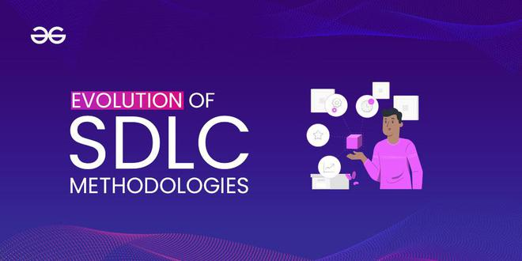

2.6 Evolutionary Development Models
Evolutionary development models treat software as something that grows and changes over time rather than being fully specified and built in a single pass. The system is developed through a sequence of versions (increments), where each version refines, extends, or corrects the previous one. Requirements, design, and implementation co-evolve as stakeholders learn from each release — in contrast to Waterfall, which tries to freeze requirements before construction.
“Evolutionary” is a family of approaches, not one diagram with a single name. Several named SDLC models — evolutionary prototyping (§2.4), Spiral (§2.5), Incremental (§2.8), and Agile (§2.11) — are all evolutionary in spirit. Exams often ask for the general concept first, then examples.

Definition and core idea
In evolutionary development, the team delivers an initial version quickly with the most important or best-understood functionality. Users and developers learn from that version; the next version adds features, improves quality, or fixes misunderstandings. The final product is reached by successive refinement, not by executing one frozen plan from day one.
Key phrase for exams: “The system evolves from a partial, imperfect first version into a complete product through multiple iterations.”
Key characteristics of evolutionary development
- Partial early delivery — users receive usable software (or a strong prototype) long before the full feature set exists; feedback drives later versions.
- Co-evolving requirements and design — the SRS is not fixed at the start; it is updated after each release based on experience.
- Adaptation over prediction — the process embraces change in business needs, technology, and understanding rather than treating change as failure of planning.
- Successive versions — version 1.0, 1.1, 2.0, or sprint releases each build on the previous codebase or design.
- User-centred learning — especially when UI or workflow is critical; same motivation as prototyping, but evolutionary models may deliver production code each cycle.
- Architecture must be managed — without refactoring and standards, repeated extension leads to unmaintainable “big ball of mud” systems.
Evolutionary vs other development styles
| Aspect | Waterfall (classical) | Evolutionary development |
|---|---|---|
| Requirements | In classical Waterfall, requirements are treated as fixed early in the project. | In evolutionary development, requirements emerge and change across successive versions. |
| Planning horizon | Waterfall plans the whole project in detail at the start. | Evolutionary development plans the next version in detail while keeping only a high-level roadmap for the whole effort. |
| First user-visible result | Waterfall delivers a user-visible result late in the lifecycle. | Evolutionary development delivers a core product or release early. |
| Response to change | Waterfall tends to resist change because changes are costly after sign-off. | Evolutionary development expects change and plans for it in each new version. |
| Risk of wrong product | Waterfall carries a high risk of building the wrong product if requirements were wrong from the start. | Evolutionary development lowers that risk because mistakes can be corrected in later versions. |
Major examples of evolutionary models (know each for exams)
1. Evolutionary prototyping (Prototype Model — §2.4)
The prototype becomes the product. Version 1 is a minimal prototype; later versions add modules and refactor. Same codebase grows until it is the delivered system. Best when requirements are unclear but something usable must appear quickly.
- Strength. This approach gives fast feedback and shows continuous visible progress to stakeholders.
- Weakness. Technical debt can grow quickly if code quality is ignored between versions.
2. Spiral model (§2.5)
Each spiral cycle delivers a more complete evolutionary increment while emphasising risk reduction before engineering. Evolution happens around the spiral; risk analysis distinguishes Spiral from simple “build version 1, then version 2” without structure.
3. Incremental process model (§2.8)
The system is split into increments (chunks of functionality). Each increment is often developed like a mini-Waterfall and delivered to the customer. Overall architecture is usually planned early; evolution is in features delivered, not in discovering the whole architecture from scratch.
- Contrast. The Incremental model uses planned partitions of functionality, whereas pure evolutionary prototyping may let architecture emerge over time.
4. Agile software development (§2.11)
Short sprints deliver working software every few weeks. Requirements live in a backlog that changes every sprint. Agile is the most widely used evolutionary approach in industry today (Scrum, Kanban, etc.).
Evolutionary development vs Iterative Enhancement (§2.7)
Exams often contrast these two — read §2.7 in full, but summarise here:
| Aspect | Evolutionary development | Iterative Enhancement |
|---|---|---|
| Overall architecture | In evolutionary development, the architecture may emerge or change during early versions. | In iterative enhancement, the architecture is usually defined upfront and kept stable. |
| Requirements | Evolutionary requirements are highly fluid and co-evolve with the product. | Iterative enhancement keeps requirements more stable while each iteration adds planned modules. |
| Goal of iteration | Each evolutionary iteration aims to learn from users and adapt the product. | Each iterative-enhancement iteration aims to implement the next planned part of a known structure. |
| Example metaphor | Evolutionary development is like growing an organism over time. | Iterative enhancement is like filling in the rooms of a house that was already designed. |
Process view — how an evolutionary project unfolds
- Vision and priorities. The team defines a thin first release (a minimum viable product) that includes only must-have features.
- Build version 1. The team accepts some imperfection but documents known gaps and technical debt items openly.
- Deploy and gather feedback. Real users reveal missing business rules, performance problems, and new requirements.
- Reprioritise backlog. The product owner chooses the next features and fixes for version 2 based on feedback.
- Refactor and extend. The team improves architecture where needed, adds modules, and runs regression tests before the next release.
- Repeat the cycle until acceptance criteria for the full product are met or the product is retired.
Advantages of evolutionary development
- Handles changing requirements — business, law, and competition change; evolutionary models absorb change without treating it as project failure.
- Early business value — partial system can generate revenue, support pilots, or satisfy regulators incrementally.
- Continuous stakeholder engagement — users stay involved; reduces gap between expectation and delivery.
- Lower risk of total wrong product — mistakes corrected in the next version rather than after a multi-year monolith fails acceptance.
- Morale and transparency — visible progress motivates team and sponsors.
Disadvantages and risks
- Scope creep — without disciplined backlog control, “just one more feature” never ends; budgets explode.
- Architecture erosion — quick fixes in version 1 and 2 make version 3 slow and buggy unless refactoring is scheduled.
- Hard upfront estimation — total cost and end date are uncertain; fixed-price contracts are difficult.
- Documentation lag — teams may skip updating specs; maintenance and audit suffer.
- Process discipline required — evolution is not chaos; needs product owner, priorities, and quality gates.
- Integration complexity — each new version must integrate with existing modules and data; regression testing load grows.
When to use evolutionary development
- Requirements are incomplete, volatile, or market-driven (e-commerce, social apps, internal tools).
- Competitive pressure to ship early and improve often.
- Stakeholders can participate in regular reviews or sprint demos.
- Domain allows incremental rollout (beta users, pilot departments, feature flags).
When NOT to use (or use with care)
- Requirements are fully fixed by law or contract and will not change (strict Waterfall/V-Model may be simpler to audit).
- System must be 100% complete and certified before any deployment (some safety-critical systems use evolution internally but release only after full validation).
- Team or client cannot commit to ongoing involvement. Evolutionary without feedback becomes uncontrolled hacking.
Real-world examples
Example 1 — E-commerce website: Version 1: catalogue and cart. Version 2: payment gateway. Version 3: reviews and recommendations. Requirements evolved after each sales season; Agile sprints are a common implementation.
Example 2 — Evolutionary prototyping: A GIS mapping tool for a city council starts as a basic map viewer; planners request layer overlays and export; the same codebase grows over two years into the production system.
Example 3 — Spiral + evolution: A defence contractor delivers increasing capability each spiral cycle while running formal risk analysis — evolution with heavy process.
Summary table — evolutionary models at a glance
| Model | What evolves each iteration? | Distinctive feature |
|---|---|---|
| Evolutionary prototyping | Each iteration extends the same prototype codebase. | Its distinctive feature is that the prototype gradually becomes the final product. |
| Spiral | Each cycle increases product completeness and process maturity. | Its distinctive feature is explicit risk analysis in every cycle. |
| Incremental | Each iteration delivers another chunk of functionality. | Its distinctive feature is a mini-Waterfall for every increment. |
| Agile | Each sprint evolves backlog priorities and working software. | Its distinctive feature is short sprints guided by Agile Manifesto values. |
Q: What are evolutionary development models in software engineering? Explain their characteristics and how they differ from the Classical Waterfall model. Describe at least three examples of evolutionary models and compare evolutionary development with iterative enhancement. Discuss advantages, disadvantages, and when such models are appropriate.
Model answer outline:
- Define evolutionary development as building software through successive versions in which each version refines the last and requirements co-evolve with the product.
- Compare with Waterfall using a table that contrasts fixed versus emerging requirements, late versus early delivery, and resistance to change versus expected change.
- Describe key characteristics such as partial early delivery, adaptation, continuous user feedback, and the need for disciplined refactoring.
- Give at least three examples (evolutionary prototyping, Spiral, Incremental, Agile) and explain what evolves in each.
- Contrast with Iterative Enhancement, where architecture is planned upfront rather than emerging over time.
- Outline the process from minimum viable product through feedback, reprioritisation, refactoring, and repeat cycles.
- Discuss advantages, disadvantages, when to use or avoid the approach, and support with real examples.
MCQ (GFG style): Evolutionary development is most appropriate when — (C) Requirements are likely to change during the project.
MCQ: Which is NOT an evolutionary approach? — (A) Classical Waterfall with no iteration.